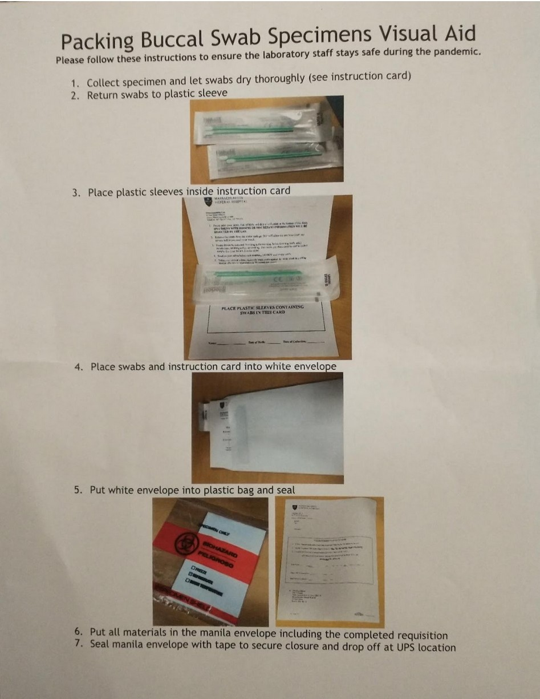
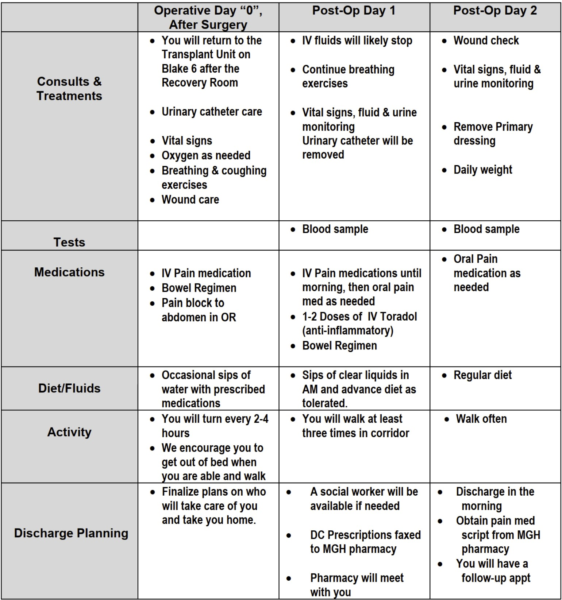
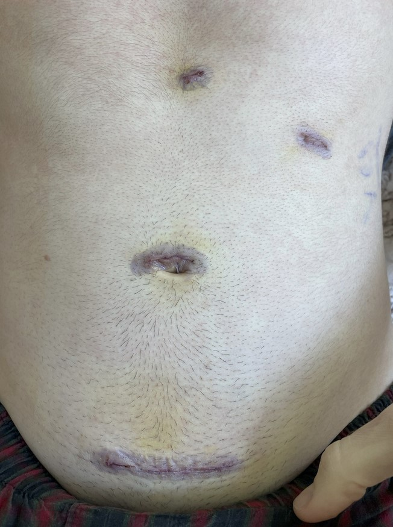
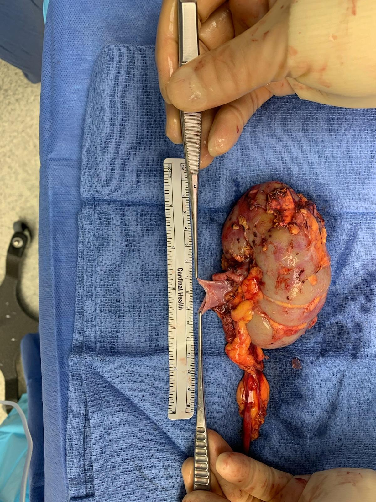

15 Steps to Donate a Kidney
Originally posted on September 27, 2021. Updated May 20, 2022.
The names in the following document have been changed to preserve the anonymity of the Massachusetts General Hospital Living Donor Care Team.
Contents
- Step 0: "Do I Want to Donate a Kidney?"
- Step 1: Apply to Be Evaluated for Organ Donation
- Step 2: Get a Physical Examination from my PCP
- Step 3: Labs
- Step 4: First Visit to the Hospital
- Step 5: Second Visit to the Hospital
- Step 6: Committee Approval
- Step 7: Family Approval
- Step 8: Get Delayed by a Global Pandemic
- Step 9: National Kidney Registry (NKR) Labs
- Step 10: I HAVE A MATCH!
- Step 11: Pre-Op
- Step 12: Surgery
- Step 13: Post-Op Check-Up
- Step 14: Recovery
Step 0: "Do I Want to Donate a Kidney?"
October 2018
While riding public transit to Newton Centre to get a haircut, I was listening to a new Vox podcast called Future Perfect. On the podcast, the host, Dylan Matthews, described his experience donating his kidney "to a complete stranger." Matthews convinced me to start thinking about it.
I have been donating blood since I was in high school. Both my parents modeled that for me. I like the idea that I can give something away that my body doesn't need, and in some cases actually regenerates, to help someone else. When I was in college, I signed up to be on the bone marrow donation registry when one of my friends was diagnosed with leukemia. I recently tried to donate stool, but I was rejected due to a recent trip I took to India. I give ten percent of my income, volunteer with local unhoused and sanctuary ministries, teach a summer science camp for kids in Mexico, help out with services at my church, and organize my colleagues with the graduate student-worker union at my school. I recognize that listing all those activities sounds braggadocious, but I'm trying to explore my own motivation and feelings. I have a fundamental desire to be "good" and a deep fear of being "evil," whatever those concepts mean to me.
I started reading about kidney donation during the months following my listening to the podcast: general information from organ donor organization websites, testimonials from some people who felt the act of donating was a positive experience, a testimonial of a negative experience, and some articles on Google Scholar about the lives of living organ donors. The most informative article seems to be by Muzaale et al: "Risk of End-Stage Renal Disease Following Live Kidney Donation," published in JAMA in February 2014. My summary of the research is that living organ donors generally are happy about their decision to donate and experience only a small increase in risk of negative effects to their health as a result of their donation, but I am disappointed in the lack of data collected. Most studies don't even follow donors for ten years, and researchers have pointed out that the nonnegative health outcomes observed relative to the general population are probably biased by the fact that you have to be healthy to donate. If I donate, I want to make sure that I am tracked by those who are planning to take a more long-term approach. Despite my misgivings about the amount of data out there for long-term donor health, I still want to go through with it.
I told my family and my girlfriend about my desire to explore kidney donation. My parents' reactions were stereotypical of loving, caring parents. They were worried, but they seemed supportive. My girlfriend was wonderful. She helped me explore my feelings on the subject and listened well.
Step 1: Apply to Be Evaluated for Organ Donation
April 2019
I decided to fill out the Massachusetts General Hospital (MGH) online form to be evaluated as a living organ donor. A few days after filling out the form, I received an email from a nurse, Emily, with the MGH Living Donor Program. Her email asked me to do six things:
- Read a Kidney Donor Welcome Packet. This packet is on point. I usually don't get far into welcome packets, but this one had information about the overall process, the team of professionals with whom I'd be working, criteria for being selected, potential risks and statistics, and my rights as a donor. Super helpful.
- Watch a donor education video. The 40-minute lecture series consists of someone pointing a low-resolution camera at a monitor and reading bullet points verbatim from PowerPoint slides. Less helpful.
- Ask any questions. I had one question about how to fill out one of the forms. They preferred to call me rather than respond to my email.
- Fill out an Informed Consent Form. I felt pretty informed.
- Call MGH to get a Medical Record Number. This gets me into their system.
- Fill out a Medical Release Form. This gives MGH doctors access to my medical records from my primary care physicians (PCPs).
Step 2: Get a Physical Examination from my PCP
May 2019
The nurse with MGH called me to ask me to get a physical with my PCP. I am generally in good health, though I had not had a check-up in the two and a half years I had been living in Massachusetts. She also asked me why I wanted to be a donor, so I told her about the podcast. I figured she was just doing her job making sure I hadn't made a mistake when I had indicated I wanted to be an "undirected" donor, meaning that I did not have someone in mind to whom I wanted to donate. But a week or so later, she called me again to say she had listened to the podcast, liked it, and had another recommendation for me. She emailed me a YouTube video of a storytelling hour with a kidney donor/recipient pair. I was a little surprised that the nurse seemed to want to engage with me, and that made me feel special.
I got my physical at my school's medical center. The doctor said I was healthy. I realized I may not have had a physical since I used to play sports in middle school. While the doctor was looking at my back, he commented that I had "a little back acne, but nothing to be worried about." I am not confident as to the relevance of this statement vis a vis my kidney function.
My next step is to inform the nurse at MGH that I had gotten my physical. Since I filled out that medical records release form, they already have access to it. Now I'm just waiting for them to tell me what to do next, probably some preliminary tests at MGH like blood work.
Step 3: Labs
June 2019
The instructions Nurse Emily emailed me asked me to go to my nearest Quest Diagnostics center—thankfully only about a mile away—pick up a 24-hour urine collection bottle, pee, fast during the following night, return the bottle the next day, and get my blood work done. I had never done a 24-hour urine collection before, but apparently it means that every time you pee during a specific 24-hour period—the second pee of a day through the first pee of the next day, inclusive—it has to all go into a "special bottle." It's really specific about the time. You have to try and time it so that your morning pee on Day 1, which you don't collect, is at the same time as your morning pee on Day 2, which you do collect.
Quest isn't open on the weekends, and since you have to drop off your filled bottle the next day, you can pick Sunday–Thursday, the obvious good choice being Sunday so you don't have to lug around your urine all day. I picked a Wednesday because I had busy weekends on both sides but wanted to get it over with. So, on Tuesday, I biked to Quest and picked up my "special bottle," a gallon-size, orange, plastic, gas can-looking thing, except instead of a spout it has a white screw cap. The Quest employees tried to get me to do the blood work there even though I hadn't fasted. I informed them that I had to wait until the next day.
I brought my special bottle with me to work. It felt weird peeing into a bottle all day. The worst part was taking it with me in and out of the office. I kept it in a brown paper bag to be discreet. I would definitely recommend doing it on a Sunday, instead.
The next day, I did my last "void" into the special bottle and took it to Quest. Once I arrived, they drew about a dozen blood samples. Finally, after they finished, they hit me with a surprise: I had to pee again! They needed one more urine sample for a final test. After chugging water and espresso from across the street and trying in vain to pee for 45 minutes, I gave up and went back to work for a couple of hours before returning to Quest again and finishing. I have a #new-start-up-idea for anyone with medical expertise: combined tests. Two liters of urine should be enough to test for everything ever.
After figuratively and literally washing my hands of this experience, I emailed Nurse Emily to inform her. She responded promptly to thank me and let me know to expect a follow up from her in a few days after the results came back. Assuming my labs are good, we'll schedule a time for me to visit the hospital for additional testing.
Step 4: First Visit to the Hospital
July 26, 2019
Today I had my first visit to the hospital. It went well, if a little long. I arrived at 9:45 AM and left a little before 3 PM. Almost every moment was utilized; I think I spent a total of 20 minutes in waiting rooms all day.
My day was divided into several meetings. First, I was introduced to Zoe, my social worker and donor advocate. That was pretty quick, and she said we'd get a chance to talk more later. Next, one of the other nurses took my vitals.
After getting my vitals taken, I met with Nurse Emily in person for the first time. She walked me through a very similar (if not the exact same) slide presentation from the donor education video. I already knew most of the information, but I did learn some interesting new stuff:
- If I do need a new kidney in the future, the fact that I donated moves me to the top of the waiting list. Nurse Emily said that this means instead of waiting years for a kidney, I would only need to wait a few months. When the grafted kidney eventually died, I would be placed at the top of the waitlist again. This surprised me. I wonder if the added benefit outweighs the added risk of giving up one of my kidneys. I asked about this, and Nurse Emily thought the answer was no. She also stressed that MGH is really good about determining if I am at risk for end-stage renal disease (ESRD) later in life. The Living Donor Care Team at MGH wouldn't let me donate if they thought there was a chance of me needing a kidney donation in the future.
- Kidneys from living donors have a half life of fifteen years. Kidneys from deceased donors have a half-life of ten years. The half-life is the median survival time for a grafted organ in a new body. This is close to meaning that I can expect my kidney to live for fifteen years in its recipient's body.
- Previously, I had found an article about a special insurance offered by an organization called the "Living Organ Donor Network," but it might be a scam. Neither Nurse Emily nor Zoe had heard of it, and Nurse Emily offered to look into it for me.
- I should avoid NSAID drugs like aspirin and ibuprofen after I donate because those drugs are filtered by the kidneys. I can still take acetaminophen.
- Any time I get labs done in the future that measure kidney function, the results will be abnormal.
- During the surgery, they fill my abdomen with gas to make it easier to maneuver the tools. After the surgery, this gas will make my shoulders sore. This is transient and normal.
- MGH has a really good record on living organ donation relative to the national average. I already knew this, but Nurse Emily told me that some doctors joke that MGH stands for "Man's Greatest Hospital."
Nurse Emily told me that I had asked a lot of questions she had never thought about before and that I had done a lot of research, which made me feel good. At the end of our meeting, I signed some forms for medical records and waited for Zoe, the social worker.
My meeting with Zoe was my favorite part of the day. She is really funny and has an encouraging presence. She opened by asking why I wanted to donate, and I stumbled through my answer with something about feeling like it was the right thing to do. She really wanted to dig deep, though. We talked about my work; my girlfriend; my family; my faith; my taste in music, movies, and books; my mental state; and my personal improvement projects. She diligently took notes the whole time. She is good at being a social worker/advocate, and I'm really glad that job exists. As a safeguard against hospitals pressuring potential donors to follow through with their donation, social workers like Zoe are paid by the state government instead of the hospital. I feel like I don't have to worry about maligned incentives affecting the hospital staff, but I'm still glad Zoe's job exists.
I learned a lot from Zoe that I did not get in any other presentations:
- Donating a kidney while young is abnormal. Zoe said she could "count on one hand the number of living donors [she's] met under 30, and on two hands under 40." She said this is because you have to be kind of wealthy to be able to donate. The surgery and all the testing is covered by the recipient's insurance, but I still need to get myself to and from the hospital and doctor for all of these visits. I'm lucky because I live within biking distance, but she said the average out-of-pocket costs including travel, parking, food, and all incidental costs are around $3,000.
- Health insurance may be difficult to get in the future. I plan on graduating shortly before I donate and starting my own company, so Zoe told me to contact Blue Cross Blue Shield, the insurance I currently get from my employer, and ask about transitioning now into non-employer sponsored coverage. Also, I should mention I have a friend who is donating an organ and ask what would happen to my premium if I did such a thing. She said she's only heard of one horror story where a donor was denied coverage, and that donor was from Costa Rica, but I should still check just to be safe.
- I should take out a life insurance policy, as much as I think I am ever going to want, before the surgery. They'll never raise my payment as a result of donation because they'll never ask, but I will have a responsibility to disclose if I've already gotten the surgery before I enroll in the plan.
- After I donate, I should use two hot packs on my shoulders to feel better, not tolerate any pain and take the pain medicine they prescribe me when I feel pain, and do "chair yoga" when I feel up to it to limber up.
- If I want research institutions to have access to my data, I'll need to sign a Release of Information Form annually after my surgery. I brought this up with everyone with whom I met today, mentioning that I wasn't thrilled with the lack of follow-up in the academic literature.
- There is a social group for organ donors. Zoe says they all have two things in common: sharp wit and an abundance of empathy. That might be a fun group to be a part of some day.
After my meeting with Zoe, she gave me her card and I went to meet the head of the MGH Living Donor Program. He also started by asking me why I wanted to donate, and this time I was ready with a better answer. He also asked me about and took notes on my family history and mental state:
- He asked what I had read about and what my thoughts were on kidney donation. I told him about the various sources I had consulted and that I got the impression that it was a really great way to make a positive impact but that I was disappointed in the lack of long-term follow-up research. He agreed and added that the medical community didn't think there was much increased risk for development of ESRD after the 7-or-so years of follow-up of previous studies.
- I asked him if anyone on his team had donated a kidney, and he said not yet, but they might get a new physician soon who did.
- I should tell my parents that I'm really going through with this. I think I'll talk to them about it more seriously over Thanksgiving or Christmas.
We concluded with a brief physical examination, and I left to go to the main campus of the hospital to get some more testing done.
On my way out, Nurse Emily said to send her some more availability for Day 2 of hospital evaluations when I get the chance.
The remainder of my testing was pretty simple. I got an EKG and a chest x-ray. Both of the doctors seemed enthusiastic about me being an undirected donor. My conversation with the EKG doctor went as follows: "So why are you getting an EKG today?" "I'm being evaluated as a potential organ donor." "Oh! Wow! Who are you donating to?" "I don't know yet." "Oh! You don't know...just a random person...you are so good!" "Haha, thanks."
Final thought: I feel like I'm in good hands.
Step 5: Second Visit to the Hospital
September 20, 2019
Today was my second round of tests and meetings at the hospital:
8:15 AM: CT scan
10:30 AM: Transplant psychiatrist
12:00 PM: Blood work, transplant coordinator, transplant surgeon, and donor advocate.
I arrived at my CT scan 15 minutes early because I thought it would take me longer to navigate MGH. Nonetheless, they got to me right away. After filling out the intake form and drinking a liter of water, I changed into the hospital linens and met with a new nurse, who gave me an IV. Everyone here comments on two things: how pretty my cross necklace is and how good it is that I'm donating a kidney. "So you're donating a kidney." "Yes, ma'am." "To who?" "I don't know yet." "Oh! You're just doing the right thing?" "Yes, ma'am." I like the nursing staff.
I don't know if I've ever had an IV before. I did not like it. It felt like someone was pinching me the entire time I was wearing it, the saline injection felt cold and tickled, and it's just weird to have something foreign in your arm.
After the nurse inserted my IV, I waited a few more minutes for the technician. He was nice. We had the same you're-donating-a-kidney-good-job conversation. Then he explained the CT scan. He gave me more saline and told me that they were about to inject iodine. "The iodine is to make your veins appear on the CT scan. It works because iodine is higher up on the periodic table than blood." Confused, I asked what he meant by that. "Iodine is higher up on the periodic table, so it shows up as white on the CT scan. Blood is lower, like 30. I don't remember what iodine is." Blood isn't on the periodic table, as it is not an element. I think iodine is used in CT scans because it's low on the periodic table, meaning it's more dense and therefore able to absorb x-rays. I may be overthinking this. I responded, "Okay, thanks!" and followed his instructions to get into the x-ray machine. The technician told me the iodine injection would make me feel cold, get a weird taste in the back of my throat, and feel like I was peeing myself. He was right.
The scan itself was about ten minutes long including a break in the middle. I changed and left the office at 9 AM. Everyone was kind and professional.
One of the rules in getting a CT scan is you can't eat anything solid for two hours beforehand, so I think the scheduling office gave me the extra hour and a half to get breakfast before the rest of my day. I had a smoothie for breakfast before the CT scan, so instead I got some work done while sitting in the waiting room of the transplant psychiatrist.
I've got about twenty minutes before the lab technicians get back from lunch. I just finished meeting with the transplant psychiatrist, transplant coordinator, and transplant surgeon.
My conversation with the psychiatrist was very similar to my previous conversation with Zoe, the donor advocate. He had access to her notes, so he asked me to talk about my family, faith, work, relationship, etc. Nice guy.
After my evaluation, I walked to the other campus. I checked in thirty minutes before my scheduled appointment. Right away, a nurse grabbed me to take my vitals. Nurse Emily met me shortly after that. She took me into a private exam room and asked me how I was feeling about the process and if I had any questions. Here's what I learned:
- There is a program run by the National Kidney Registry (NKR) that offers help with paying for lost wages, travel, and having a caregiver around the surgery for donors who make less than $60,000 per year. I definitely fit that category, and while my current plan of waiting until I graduate makes it so I don't have to worry about travel or lost wages, I did ask for more information on the last one. It would be really nice to have financial help getting my girlfriend or a parent to be my caretaker for my recovery period after the surgery.
- The next step after today is the donor team at MGH will meet to decide whether or not I should be accepted as a donor. I'll hear back next Wednesday. If I'm accepted, I'll be connected to NKR and begin their evaluation.
After meeting with Nurse Emily, I met with the transplant surgeon, Dr. Matsuzaki. Here are my notes from that conversation:
- My left kidney is about 17% smaller than my right kidney, which is in the normal range. Bigger usually means better, so I will most likely be donating my left kidney. If I'm going to donate one of my kidneys, I'm at least going to keep the better one.
- Kidney removal surgeries, or "nephrectomies," used to be done by cutting a large hole in your torso, reaching in, and removing the kidney. Now, the surgeon instead makes three small incisions and uses a robot to detach the kidney before pushing it out through a fourth, medium-sized incision. This new, robot-assisted surgery technique is referred to as "laparoscopic." Because the incisions are smaller, it's easier for the body to recover and is a preferred method of performing nephrectomies today.
- Dr. Matsuzaki has performed over 1,800 kidney transplants, roughly 800 of which were laparoscopic.
- Dr. Matsuzaki enjoys studying kidney donation in addition to being a practicing surgeon. He is an MD-PhD and loves immunology. He currently does research on monkeys to test how long they need to be on medication after receiving a kidney in order to accept it.
After my meeting with Dr. Matsuzaki, I had some more labs. They were pretty quick. They only needed three vials of blood, and the nurse was gentle and efficient.
After labs, I had my last meeting of the day with Zoe, my donor advocate. We spent some time catching up, then I asked her about how she got involved with donor advocacy. She told me she found donor advocacy was a great fit for her because she felt there was a strong need for an advocate for the people donating. Also, she likes connecting with people.
Zoe and I finished at around 1:30 PM. I'll write again next week after I hear back about my eligibility.
Step 6: Committee Approval
September 26, 2019
I got a voicemail from Nurse Emily yesterday asking me to call her back for news about my donation. I called back today, and she informed me that I had been approved to donate! How do I feel? Definitely a little excited, but to be honest, I didn't think there was much chance of me getting rejected. I'm definitely glad to hear the news though.
Nurse Emily sent me an informational slideshow which is pretty much just a review of the materials I've already read as well as a couple of forms to sign allowing MGH to share the results with the National Kidney Registry (NKR). She also explained that, since I won't be donating until June, I should hold off on that final set of labs until I'm ready to be activated on the registry. My plan is to graduate on May 29, meaning that I should do the final labs and get activated mid-May.
So the next step is updating my family over Thanksgiving. I think it'll go well. My prediction is that they will be supportive, but make at least some effort to get me not to do it by asking a lot of "what if" questions. I just have to be ready with data. For example:
- What if the surgery goes poorly? While there is certainly a risk with any surgery (about 1 in 2,300 get MRSA at MGH), I believe that the risk here is small and worth it. MGH has one of the best records in the country for organ donation outcomes, and my surgeon in particular has performed over 1,800 kidney transplants. I'm in good hands.
- What if your partner or a family member needs a kidney? No one in our family has a particularly high risk for ESRD. Otherwise, I probably wouldn't be able to donate. If someone in my life needed a kidney and we would've been compatible, that would be really unfortunate. But, if everyone thought like that, a lot more people would die. The good news is that I can designate up to five family members to receive a voucher such that, if one of them ever does need a kidney, they can be prioritized on the waitlist.
- What if you end up needing both of your kidneys later? While literature does show that donors' risk of ESRD does increase relative to healthy non-donors, the increased risk is still less than that of the general population. The doctors at MGH assured me they would not allow me to donate my kidney if they thought there was a significant chance I'd need it later. If it turns out I do develop ESRD, my status as a donor means I am granted priority on the National Kidney Registry and am far more likely to receive a kidney from someone else. In fact, this prioritization feature might mean that I am actually less likely to die of ESRD if I do donate my kidney.
Step 7: Family Approval
November 27, 2019
I was pretty nervous about the conversation with my family. A couple of days ago, I had a practice conversation informing my girlfriend's parents of my decision to donate. I'm glad I did, though their reactions ended up being different from my family's. In particular, my girlfriend's mom doesn't want me to go through with it. She keeps half-joking that she is "on Team Nick-with-Two-Ks," which, to be fair to her, is clever. Yesterday, Nurse Emily emailed me to check in and ask if I needed anything going into the conversation. She echoed the advice of my girlfriend's parents to be direct and efficient in my announcement and to give time after the conversation for my parents to process and discuss without me.
Today, I flew to visit my family in Phoenix for Thanksgiving. I decided to tell them tonight about my decision to donate. I waited until my mom got back from work and for everyone, my parents, brother, and grandparents, to settle in the living room. I asked, "Would you mind if we had a conversation?" putting emphasis on the word "conversation." Then, with everyone's attention, I announced, "I have decided to donate a kidney in June." Then, I waited for the questions.
The first question was "To whom?" I responded, "I don't know yet. I will be an undirected donor." Everyone except my mom had the same look on their faces like they were digesting a big piece of information. My mom looked down at her wine glass, then asked, "Why? What made you start thinking about this?" Over the course of the conversation, I gave a summary of the past year of listening to the podcast, research, and tests. I had all my statistics ready. The most useful ones were the lifetime effects of kidney donation: "According to the literature, the chances of me getting ESRD will go up, but they will still be lower than those of the general population. If I do need a kidney one day, which is extremely unlikely, I will be placed at the top of the list to get a donor kidney. So, while most people can live on dialysis for up to years, my expected wait time will be on the order of weeks. My expected life span will not decrease as a result of my donation."
Over the course of the conversation, my brother and father didn't say much. My mom and grandparents asked a lot of questions, but in the end, everyone was supportive. When I discussed my timeline for the operation, my mom immediately offered to be there for the operation and to trade off with my dad for the recovery process. I'm blessed to have such a wonderful support system.
The next step is to tell Nurse Emily that the conversation went well. Then, probably in May, I'll get my final set of labs done to let the algorithm know with which recipients I could be a good match. I plan to graduate on May 29, and the NKR algorithm gives at least three weeks of notice before the surgery, so I think I should register on May 7. I'll propose that to Nurse Emily.
~
A few days later, Nurse Emily got back to me with warm wishes and information about reimbursement for expenses related to the surgery. Here's what she sent, titled "About the Donor Shield Program for NKR swaps":
Lost Wage Reimbursement
Donors who donate at a Donor Shield Center and are not being reimbursed by insurance, their employer or any other National or State program, may be eligible for reimbursement of up to 4 weeks of lost wages with a maximum reimbursement of $1,500 per week. Reimbursements for weeks 3 & 4 will require clearance from the transplant center. Lost wages are defined as expected earnings that a donor lost due to time missed at work as a result of the kidney donation.Travel & Lodging reimbursement
Donors who donate through the NKR swap are eligible for up to $2,000 in reimbursements of their travel and lodging expenses, for them and a travelling companion, related to their kidney donation based on submitted receipts. Add-on or luxury expenses are excluded. Driving expenses are reimbursed at the IRS medical mileage rate. Lodging reimbursement covers hotels in the proximity of the transplant center.Coverage for any uncovered medical complications
If a kidney donor experiences post-surgical complications (e.g. hernia, etc.) related to kidney donation, these medical costs should be paid for by the recipient's medical insurance. Sometimes insurance companies avoid paying these costs by limiting the time that they will pay for donor complications. Sometimes insurance companies ask the donor for an additional co-payment for donor complications. While these instances are rare, they do happen and they are wrong. The Donor Shield Program ensures that any donor who donates at a Donor Shield center is never asked to pay for a post-surgical complication that is a result of their kidney donation.Life Insurance policy
Any donor who donates at a Donor Shield Center will be automatically provided with kidney donation life insurance which is purchased by NKR. The insurance includes a $500,000 principal sum covering a period of 365 days post donation. Notification of a claim must be provided within 90 days of a covered accident.Disability Insurance
Any donor who donates at a Donor Shield Center will be automatically provided with donation disability insurance which is purchased by NKR. The temporary total disability insurance includes a maximum $1,500 weekly benefit for 365 days subject to the donors last 12 months of earnings, with a 30-day waiting period.
The part I would take advantage of is the Travel and Lodging reimbursement, probably for one or two parents to care for me after the surgery. I could get a round-trip plane ticket from Phoenix to Boston covered. Nurse Emily said we'd just apply for the program when I get registered with NKR.
Step 8: Get Delayed by a Global Pandemic
Shortly after my last entry, the first case of COVID-19 was identified in Wuhan, China. Since then, the disease has rapidly progressed into a global pandemic. I am grateful that neither I nor anyone in my family has contracted the virus, and I consider myself blessed, all things considered, but I am saddened that my donation has been put on hold.
~
After getting vaccinated, I redid most of the blood and urine testing as well as a chest x-ray and EKG. I also had phone or video interviews with the new donor advocate; the nephrologist, Dr. Sotiropoulos; the new social worker; and Nurse Emily. Because it had been more than a year since I had originally been approved to donate, the MGH team had to reassess my ability to donate with updated test results.
During my call with Dr. Sotiropoulos, he asked me if I had gained significant muscle mass in the past year. I thought back: I had been making an effort to work out during the pandemic, but I didn't feel like I had gained that much muscle. Plus, I didn't want to give him the impression that my body was different than it had been a year ago and would therefore require more testing. So, I said, "No." He replied, "Hmm, well, your blood work shows that your creatinine levels have increased. That usually means that either you've gained muscle mass or your kidneys have a problem. Just to be sure, I'm going to order a repeat of the 24-hour urine collection." My attempt to convey I didn't need any further testing had failed. "No, I worked out every day!" I explained to no avail. The next week, I peed into my least favorite orange gas can all day before biking with it through the rain for six miles to deliver it to Quest Diagnostics. When someone asks you if you've been working out, you say YES!
A few days later, I got a call from Nurse Emily letting me know that I had been reapproved for donation. She emailed me three forms to sign:
- Release of Information allowing NKR to get access to my medical records
- Advanced Donation Program Informed Consent Intended Donor form. This form included space for five immediate family members to be designated "voucher holders," so that if any of them ever need a kidney, they can jump the line. It's a cool alternative to designating that you want someone in particular to get a kidney because they need one ASAP. Here's what the form looks like:
- Informed Consent for Non-Directed Kidney Paired Donation Donors form. This form basically says, "Are you absolutely positively sure you want to donate your kidney to a stranger?"
She also sent me an updated informational video. I confess: I did not watch it. To be honest, after having read, watched, and discussed the massive amount of kidney donation-related information that I have at this point, I think I understand it by now. Nurse Emily, if you're reading this, don't be mad at me.
Step 9: National Kidney Registry (NKR) Labs
May 24, 2021
An NKR phlebotomist came to my house to take my blood today! Scheduling this was a bit of a hassle. Last week, Nurse Emily gave me the contact information of ExamOne, the company NKR uses to coordinate and collect blood samples. They kept me on hold for a while before dropping my call, and when I did get a hold of them, I was directed to call a different number to set up an appointment. The person who answered at that number recommended I call a third number, and that person told me she would pass on my contact info to a fourth and to expect a call later that day. A couple days and phone calls later, I got a call from the phlebotomist who scheduled my appointment. Come to find out, ExamOne is a Quest Diagnostics company, which makes sense. Sorry; I just needed to vent.
The phlebotomist was kind and professional. In the interim, I had received two boxes of phlebotomy equipment in the mail. I think they were mostly identical, except one had a form and return shipping stickers. The phlebotomy visit was scheduled at 8 AM, and I'm not used to waking up that early, but she only had to stick me once. My roommate sat next to me on the couch and watched, making himself useful by holding the empty vials for the phlebotomist. The phlebotomist explained that the tubes had no air inside them to allow the blood to have an easier time flowing into them. They contained a small amount of anticoagulant fluid to keep the blood from clotting on the journey to California for testing. After she took my blood, she told me I was brave and that I was her first donor (she usually collects samples from recipients). Then, my roommate walked her out, and I went back to bed for a couple hours.
Nurse Emily said it will likely take two weeks to process my samples, at which point I can be added to the registry.
June 6, 2021
I got an email from the NKR to fill out an online form requesting wage or lodging reimbursement. It only asked for interest in both. I put that I wanted lodging reimbursement, but not wage reimbursement, and that I would still be able to donate even if I didn't get it. I didn't ask for wage reimbursement because, at that time, I will be in between graduating and starting work.
June 9, 2021
Yesterday, I got a Human Leukocyte Antigen (HLA) sample kit from NKR in the mail. According to the instructions, you can only take a sample immediately after you wake up, before ingesting anything or brushing your teeth. So, this morning, I took my cheek swabs, sealed them in the envelope they sent me, and dropped it off in the mail.
Step 10: I HAVE A MATCH!
August 5, 2021
I officially have a match! I got a call from Nurse Emily this morning with the exciting news. I have a pre-op appointment for September 7th and surgery on the 16th. I AM SO PUMPED!
I also found this new-ish video from NatGeo about undirected kidney donation.
Step 11: Pre-Op
September 7, 2021
Today, I had my pre-op appointments. I took a bus to Boston yesterday and slept on a friend's couch last night. I took public transit to MGH and checked into the transplant office. They took my temperature, blood pressure, and weight; drew about a dozen vials of blood; and had me pee into a cup. Then, I met with Nurse Emily. After we caught each other up on our lives, she reviewed information regarding my upcoming surgery, also sent to me in an email:
- On Monday, I'll receive a pre-op telephone call.
- On Tuesday, I'll need to take a COVID test.
- I need to check in for my surgery at 5:15 AM on Thursday.
- I will be allowed one or two visitors during my stay in the hospital, depending on the COVID precautions at the time.
- I will likely spend two nights recovering in the hospital, but I can stay a third day or go home after only one night if I'd like.
- NSAIDs like ibuprofen aren't strictly prohibited after surgery, but I should avoid them if I can.
- It's going to take a while for my remaining kidney to grow after surgery, so I'll likely be low energy for a couple months.
- For the two days prior to surgery, I should wash my torso with a special antibacterial soap called "Hibiclens" while showering. I should not use another soap in addition to Hibiclens. Nurse Emily gave me a bottle to take with me.
- The day before surgery, I can't consume food or gum after 4 PM. I can't drink anything, including clear liquids, after 1 hour before my arrival at MGH.
- In the evening before my surgery, I need to drink a bottle of magnesium citrate, a laxative I can buy at a pharmacy. That will empty my bowels to give the surgeon more room to work.
- I can't lift anything weighing 10 lbs or more for 4-6 weeks after surgery. I think I'll likely recover faster than this.
- I might have pain after surgery. They'll send me home with a prescription for powerful pain meds, and I can get more if I need to.
- One source of the pain will be from any leftover gas used to inflate my torso for the surgery. Pain meds won't help. I should do chair yoga to solve this problem.
- Because they need to cut through my abdominal muscles, I'll wake up feeling like I "did 1,000 crunches."
- I might also develop gonadal pain due to the perturbation of some blood vessel near the kidney. Ice will help.
- If my recipient wants to contact me, they can write me a letter, which will be delivered to me through Nurse Emily. I have decided that, even if I do get contacted, I won't respond. I don't want a relationship with my recipient.
I also met with Dr. Matsuzaki. He walked me through some of the same material and added that my kidney will be going to someone in Florida. He will be in charge of the surgery and will have one surgical fellow assisting him.
September 13, 2021
I had my pre-op phone interview with the anesthesia team today. The woman who called me was super nice. She asked me if I got motion sickness easily, and when I responded affirmatively, she told me she would make sure I'd get "the good cocktail" to help me not get nauseous after surgery. A little while after our phone call, Nurse Emily gave me a call to check in and make sure I was feeling okay going into the surgery. Everyone helping me has been so sweet.
I'm working on a Facebook post to advertise my kidney donation to my friends and family. Originally, I was planning on keeping it as private as possible, but I learned that having someone with whom you have a close relationship donate a kidney is one of the most popular ways people decide to donate one themselves. Here's my draft post:
I'm getting my left kidney removed today. It's a minimally invasive surgery with a few small incisions (made by a robot, which is super cool). The kidney will get flown to Florida and transplanted. Thanks to some amazing math implemented by the National Kidney Registry, the donation is starting a chain so that other folks who need kidneys and have partners who are willing to donate but aren't a perfect match can also get the kidneys they need. That means that, over the next few weeks, a partner of my kidney's recipient will donate their kidney to someone else, who will have a partner willing to donate to someone else, and so on. Furthermore, instead of our recipients getting "okay" matches from a friend or family member, all of our recipients get the best match for them of the tens of thousands of people in the nationwide registry, enabling longer, better lives for all of our recipients.
This is a super safe procedure. The chance of me dying in surgery is about 1.3 in 10,000, and the probability that the kidney will help its new host is about 95%. There is no evidence that the quality or length of my life will decrease because of this surgery. Before being approved, I underwent substantial physical and psychological testing to ensure that I am healthy enough to donate. I am blessed with some of the best medical professionals in the world on my team. My surgeon has performed 1,800 kidney transplants. Please pray for me, my surgery team, my recipient, and Ann and my dad, who are helping me while I recover.
If this is something in which you might be interested, I would be honored to talk with you about it. Please feel free to reach out. I was inspired by a podcast, which you can check out here: https://www.vox.com/science-and-health/2017/4/11/12716978/kidney-donation-dylan-matthews.
September 14, 2021
I got my COVID test this morning, took a nap in a park, and checked into my hotel with my dad, who will be staying with me during my recovery. I realized I lost my bottle of Hibiclens, so I had to pick an extra bottle up from the store along with my bottle of magnesium citrate.
September 15, 2021
Today is the final day before my surgery. I ate my last meal shortly before 4 PM, and then drank my bottle of magnesium citrate. It was gross. At the pharmacy, there were two flavors: cherry and grape. I love grape soda and other grape-flavored things, so I picked the cherry flavor to avoid ruining grape for me forever. As instructed, I sipped on it over the course of an hour. I had a pretty small bowel movement, and my stomach still feels gassy as I settle into bed, so I anticipate a...fun...night ahead.
SO PUMPED FOR SURGERY TOMORROW!
Step 12: Surgery
September 18, 2021
My surgery was a success! I woke up early Thursday morning, took a shower, had a small bowel movement, and walked over to the hospital with my dad. He dropped me off at the front desk, and I found my way to the check-in location. They had me change into a gown and took my vitals, then allowed me to take a selfie and post my announcement to Facebook.
Two nurses wheeled me to the OR. After some small talk, they left me so I could meet the anesthesia team. I was a little nervous getting the IV, so they talked to me gently. I met the surgical fellow, and Dr. Matsuzaki labeled my left side "YES" to indicate the side for my kidney removal. I was wheeled into the OR, given some IV anesthetic, and quickly passed out. I think that was around 6:30 AM.
I woke up slowly in a lot of pain that afternoon. I spent most of the first day drugged and in and out of consciousness. I vomited a couple times, and I belched so violently that I thought I tore my incisions. At some point, Dr. Matsuzaki visited me and approved a narcotic that I controlled using a push button. That was super helpful. Originally, I think I had a vision that I wouldn't need narcotics, but every decision I made to put away pride and allow myself access to pain medication was a good one. The nurses were very busy, so asking early and often was key.
My girlfriend and father arrived around 1 PM to visit. I am so thankful for their presence. I didn't want to move at all, so they gave me cups of ice chips and ice packs and laid hands on me to soothe me. They were a vital component of my recovery.
Day 2 was also pretty rough. Taken as a whole, the first two days have been the worst pain I've experienced. I was catheterized for the entire first day, but got it out early Friday morning. Day 2 was my first walk and my first voluntary void, but I struggled to do both in the evening. I was too dizzy to stand, and I needed to be straight catheterized to void 900 mL of urine. After that, my recovery was monotonic. I ate some dinner, and I voided so much that the nurses kept asking me if I was sure they were individual voids. Every time I urinated, I needed to catch it all inside a plastic container. Visiting hours were 11-8, and I was again grateful for my caretakers' presence. Because I had requested it, someone from the MGH chaplain's team visited me in the afternoon. She asked me about my procedure and got emotional when I told her I had donated a kidney. Apparently, she had a relative who died of ESRD because they never made it off the waitlist. She asked me which faith I practiced, I told her Christianity, and she prayed with me.
I felt more myself on Day 3. I took my last hospital dose of Oxycontin at 1 AM. I engaged in conversation, went on several walks, and stayed awake most of the day. I ate a big breakfast and lunch and passed gas, but I couldn't accomplish a bowel movement, even with several laxatives. Still, the team discharged me around 3 PM. I thought I would be able to make it to New Haven by car, but riding was still too painful, so I decided to stay in the hotel one more night with my dad and leave the next day. I think, if I had to, I could've managed the ride back, but I would have been in a lot of pain. Now, I'm back on a staggered regimen of Tylenol and Oxycontin, quietly hanging out in the hotel room with my dad.
Nurse Emily told me that my donation chain only had two transplants. Apparently, this is normal now; the NKR no longer tries to maximize chain length due to the probability that the recipients in the chain will stay healthy enough to receive new kidneys. I admit I was hoping for a longer chain, but it still feels great to know that my kidney is going to help someone else live.
My incisions look pretty badass:
September 20, 2021
I'm now resting and recovering at home. In retrospect, I should have stayed one more night in the hospital. I'm still in some pain, but I have started taking more regular bowel movements and haven't taken Oxycontin since yesterday. The three-hour drive home was okay. I had to stop a couple of times and take anti-nausea medication for car sickness. I feel like I need a lot of sleep.
A lot of friends are reaching out to offer their support. A couple have expressed interest in hearing more and thinking about donating themselves, which is pretty cool. I feel blessed to have such a supportive network.
Nurse Emily gave me a call this morning to check in and remind me to get some labs done at a local Quest Diagnostics before my virtual check-in.
Step 13: Post-Op Check-Up
September 27, 2021
I just had my one-week checkup with Dr. Matsuzaki. I showed him my incisions, which are healing nicely, and he reviewed my recent labs and blood work I completed a few days ago at a Quest center. My creatinine level is still high. I used to hover around 1 mg/dL, but I jumped to 1.6 mg/dL after surgery, and I'm now down to 1.4 mg/dL. Dr. Matsuzaki says this is normal and that I'll probably drop back down to 1.2-1.3 mg/dL eventually. I appreciated how efficiently Dr. Matsuzaki ran the checkup. From log in to sign off lasted only 15 minutes. He texted me a picture of my kidney, which is super cool.
I've been feeling better every day. I tied my shoes for the first time this weekend. I've been completely off pain meds for a few days now. I can walk comfortably without a walker at almost my old pace, though I still like to wear baggy shorts and boxers so as not to irritate the lower incision. I can now bend over to pick up items off the ground. I'm still a little bit low-energy, but that, too, is getting better every day. Sneezing is still the worst, and I'm still gassy.
I look forward to being able to work out again, but Dr. Matsuzaki warned me to avoid ab work for six weeks. Apparently, some donors return to the emergency room after a few weeks because they overwork themselves and tear a stitch. I need to be careful.
Step 14: Recovery
October 14, 2021
Today marks four weeks from surgery. I am feeling a lot better. This week, I started going to the gym again. I can't do any abdominal work or activities that stretch my core like pull-ups, but I can use machines to lift weights with my arms, shoulders, chest, and back. I can also ride a bike, and I'm going on daily 2–3-mile hikes. Sneezing still hurts, but not nearly as bad as it used to. I stopped feeling gassy a few days after my check-in with Dr. Matsuzaki. I am also back to my original body weight. My incisions itch, but lotion helps. I don't feel gonadal pain, but I do feel extra sensitive there. If I weren't taking a post-graduation vacation, I would have been able to return to work after a couple weeks of recovery. That would not be true if my job involved lifting heavy objects, though.
October 29, 2021
Quick update: my college scholarship group published a story about me, and I can officially lift heavy things again. In the past week, I've moved heavy boxes, gone rock climbing, and done pull ups and abdominal exercises.
May 20, 2022
My six-month labs and check-in had to be delayed due to me moving to Kenya to start a new job in February. Because I visited a local clinic in Nairobi, I had to pay for my own labs, which included Cystatin C, a renal panel, a CBC, and a urinalysis, about $70 all-in. They drew some blood and had me pee into a cup, and I had to fast beforehand. The units used by the Kenyan hospital, umol/L, caused a hiccup in MGH's processing of my records, but my virtual appointment with Dr. Matsuzaki cleared it up. He was very impressed with the lack of creatinine in my blood: 93.4 umol/L. Apparently it's back down to pre-surgery levels, and that means that my remaining kidney is now doing all of the work that both of my kidneys used to do.